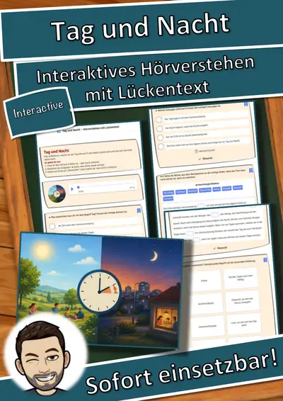
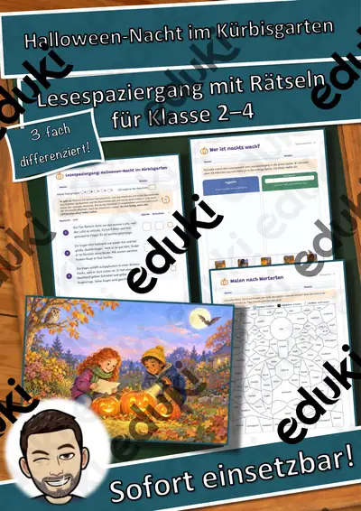
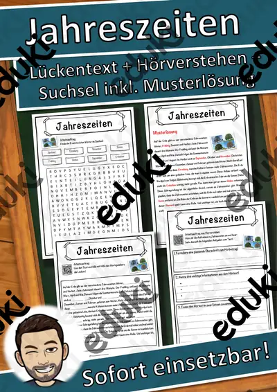

Frühlingsanfang – Tag und Nacht sind gleich lang – Lesespurgeschichte mit Rätselaufgaben (Klasse 3)
Frühlingsanfang – Tag und Nacht sind gleich lang – Lesespurgeschichte Sachunterricht (Klasse 3)Schick deine Klasse auf eine Lesespur durch einen Park am Frühlingsanfang! Ich-Erzähler Ben ist mit Mira und seiner Klasse als Frühlingsforscher unterwegs, Frau Lindner erklärt – Maskottchen ist der Marienkäfer Punkti. Vom Klassenzimmer über Sonnenuhr, Blumenbeet, Weidenbusch, Igelhaus, Storchennest und Teich bis zur Picknickdecke führt der Weg. Am Ende jedes Abschnitts verrät ein Hinweis den nächsten Ort auf dem Plan – nur wer genau liest, findet den Weg und sammelt alle geheimen Buchstaben zum Lösungswort.
Die passende Lesespur für den Sachunterricht in Klasse 3 (auch 2 und 4) – ideal im März zu Jahreszeiten, Sonne und Tageslänge und Frühlingszeichen, für Stationenlernen oder Vertretungsstunden. Ohne Marken. Geeignet für die Grundschule. Das Material ist SOFORT EINSETZBAR und in DREI DIFFERENZIERUNGSSTUFEN (leicht ★ / mittel ★★ / schwer ★★★) angelegt.WICHTIG: Das komplette Material ist sowohl in FARBE als auch in SCHWARZ-WEISS enthalten – ideal zum Sparen von Druckkosten.DAS IST ENTHALTEN
- Lesespurgeschichte in 3 Niveaus (leicht, mittel, schwer)
- farbiger Plan des Parks als Suchkarte
- Hörverstehen mit QR-Code zur MP3 (selbstständiges Hören mit Kopfhörern)
- vier Aufträge auf dem Weg: eine Zuordnung, eine Rechenaufgabe am Blumenbeet, ein Quiz und ein Steckbrief
- Rätselseite (Wörter-Suchsel + Rätselfragen rund um den Frühlingsanfang)
- Ausmalbild zum Thema
- ausführliches Lösungsblatt für die Lehrkraft mit allen Lösungen (Lesespur, Aufträge, Hörverstehen, Rätselseite)
- alles zusätzlich als komplette Schwarz-Weiß-VarianteSO GEHT DIE LESESPURDie Schülerinnen und Schüler lesen ab START, finden im Text den nächsten Ort, suchen ihn auf dem Plan und lesen bei dieser Station weiter. An jeder richtigen Station gibt es einen Buchstaben. Eingeplante Sackgassen (Sandkasten, Geräteschuppen, Schaukel, Hochsitz) sind keine Stationen und dienen der Selbstkontrolle. Am Ende werden die gesammelten Buchstaben umgestellt und ergeben ein geheimes Lösungswort. (Die Lösungen sind selbstverständlich nur im Lösungsblatt für die Lehrkraft enthalten.)INHALTLICHER SCHWERPUNKTAstronomischer und meteorologischer Frühlingsanfang, Tag-und-Nacht-Gleiche, Sonnenstand und kürzere Mittagsschatten, längere Tage, Krokusse und Weidenkätzchen als Bienenfutter, der Igel nach dem Winterschlaf, Störche kehren zurück, Frösche und Froschlaich am Teich.ABGEDECKTER LEHRPLAN (Klasse 3)
- Sachunterricht – Natur und Leben: jahreszeitliche Veränderungen bei Pflanzen und Tieren, Sonne und Tageslänge (LehrplanPLUS Bayern HSU 3).
- Mathematik – Addieren, Malnehmen und Subtrahieren im Zahlenraum bis 100.
- Deutsch – Sachtexte sinnentnehmend lesen; einem Hörtext gezielt Informationen entnehmen (Hörverstehen mit MP3).Geeignet für Freiarbeit, Stationenlernen, Vertretungsstunden, Wochenplan und als Einstieg ins Thema.
Ähnliche Materialien

Tag und Nacht – Hörverstehen mit Lückentext (interaktiv)

Tag und Nacht Lückentext mit Wortspeicher Hörverstehen und Suchsel

Lesespaziergang: Halloween-Nacht im Kürbisgarten – 3-fach differenziert (★/★★/★★★), Klasse 2–4

Tausendundeine Nacht Lückentext mit Wortspeicher Hörverstehen und Suchsel

Jahreszeiten Lückentext mit Wortspeicher Hörverstehen und Suchsel

DaZ-Wortschatz Unterwegs in der Stadt – differenziert A1/A2/B1: Hörszene (QR), Lückentexte, Rollenspiel

Der Marienkäfer – Lesespurgeschichte mit Rätselaufgaben (Klasse 4)